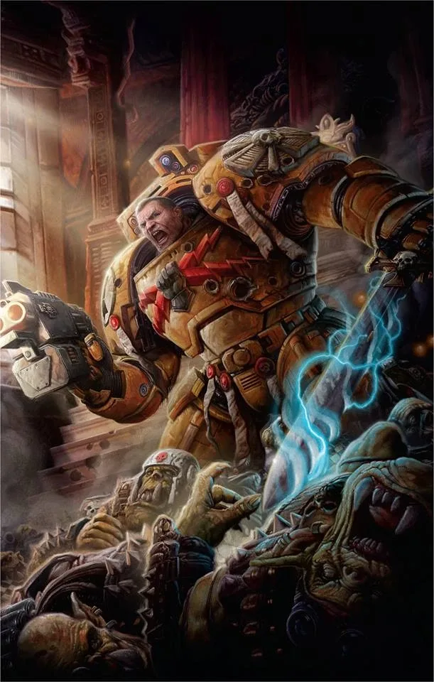
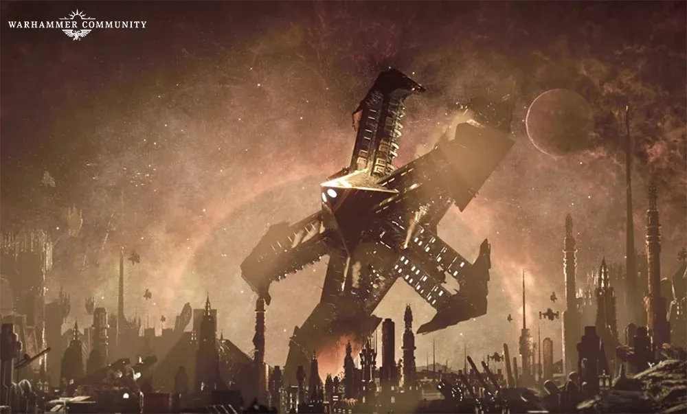
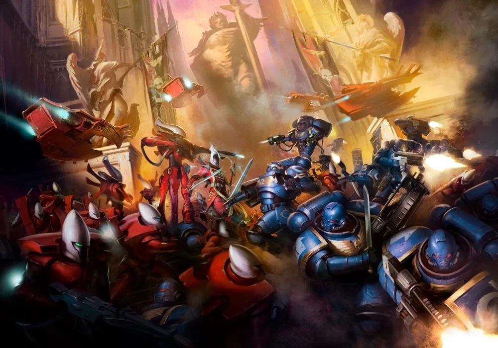
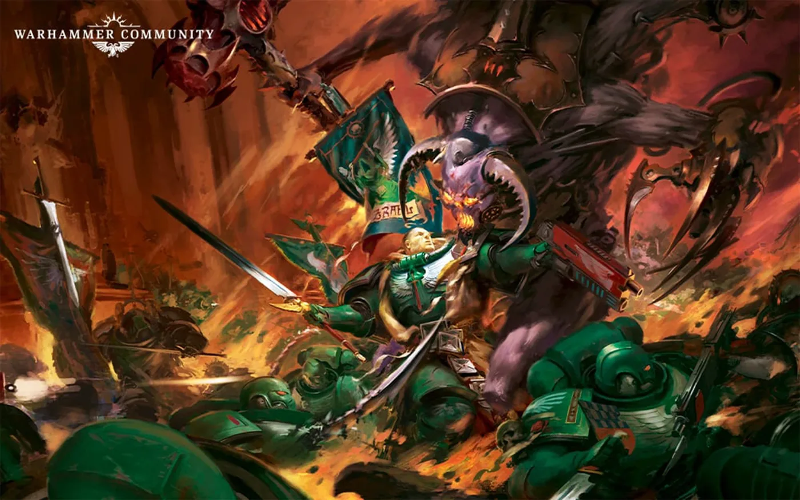

00"40K" หมายถึงอะไร?
"40K" คือช่วง สหัสวรรษที่ 41 (ปี 40,000–40,999) — ยุคหลักของเกม ห่างจาก Horus Heresy ประมาณหมื่นปี จักรพรรดิประทับบน Golden Throne จักรวรรดิกลายเป็นรัฐศาสนาที่บูชาพระองค์เป็นพระเจ้า และศัตรูรายล้อมทุกทิศ ส่วนยุคหลังการเกิด Great Rift (ปลาย M41 เป็นต้นไป) เรียกว่า Era Indomitus หรือ "M42" ซึ่งเป็นยุคปัจจุบันของเกม
ปี 745.M41 หมายถึง ปีที่ 745 ของสหัสวรรษที่ 41 = ค.ศ. 40,745
01หลัง Heresy: จักรวรรดิสร้างใหม่ (M31–M32)
Great Scouring
หลังการตายของ Horus ฝ่ายภักดีไล่ล่า Legion ผู้ทรยศจนถอยหนีเข้า Eye of Terror
Second Founding และ Codex Astartes
Guilliman เขียน Codex Astartes แบ่ง Legion ออกเป็น Chapter ละประมาณ 1,000 นาย เพื่อไม่ให้ใครมีกำลังมากพอจะก่อกบฏได้อีก — จุดเริ่มต้นของ Space Marines แบบยุค 40K
War of the Beast
Orks ภายใต้ 'The Beast' บุกจนถึงระบบดาว Sol Imperial Fists เกือบถูกกวาดล้าง ต้องใช้ Last Wall Protocol เรียกทายาทของพวกเขากลับมารวมตัว สงครามนี้ทำให้ High Lords of Terra เปลี่ยนไปตลอดกาล

02หมื่นปีแห่งความมืด (M32–M40)
Age of Apostasy
Goge Vandire ผู้นำทั้ง Administratum และ Ecclesiarchy (ศาสนจักร) ปกครองแบบทรราชใน 'Reign of Blood' จน Sebastian Thor ลุกขึ้นต่อต้าน ผลที่ตามมาคือ Decree Passive ห้ามศาสนจักรมี 'ทหารชาย' — ศาสนจักรจึงใช้ทหารหญิง Adepta Sororitas แทน
ยุคแห่งการต่อสู้ไม่รู้จบ
จักรวรรดิผ่านสงครามกลางเมือง กบฏ Warp storm และการรุกรานจากเผ่าต่างดาวนับไม่ถ้วน Abaddon เริ่มนำ Black Crusade โจมตี Cadian Gate ซ้ำแล้วซ้ำเล่า
03สหัสวรรษที่ 41 — ยุคหลักของเกม
Gothic War (Black Crusade ครั้งที่ 12)
Abaddon ยึด Blackstone Fortress โบราณในเขต Gothic Sector และใช้พลังของมันทำลายดาวฤกษ์ — ภายหลังฟอร์เทรสหนึ่งในนั้นถูกใช้ทำลาย Cadia
Damocles Gulf Crusade
จักรวรรดิส่งกองทัพบุก T'au Empire เป็นครั้งแรก แต่ต้องถอยเพราะภัย Tyranids — T'au ได้รับการยอมรับว่าเป็นภัยจริงจัง
Battle of Macragge — Tyranids มาถึง
Hive Fleet Behemoth บุกกาแล็กซีเป็นครั้งแรก Ultramarines หยุดยั้งไว้ได้ที่ Macragge ด้วยการเสียสละของ 1st Company ทั้งกองร้อย

Badab War
Chapter Master Huron แห่ง Astral Claws กบฏ แพ้สงคราม แล้วหนีไปเป็น Red Corsairs ใน Maelstrom
Second War for Armageddon
Ghazghkull บุก Armageddon ครั้งแรก Commissar Yarrick นำการป้องกัน Hades Hive และ Blood Angels ภายใต้ Dante เข้ามาช่วย
Hive Fleet Kraken
Tyranids ระลอกสองบุกจากหลายทิศทาง Craftworld Iyanden สูญเสียมหาศาล
Hive Fleet Leviathan
ระลอกสามโผล่มาจากใต้ระนาบกาแล็กซี กลืนดาวจำนวนมาก
Third War for Armageddon
Ghazghkull กลับมาอีกครั้ง Yarrick ออกจากการเกษียณ Black Templars และ Salamanders รบในสงครามยืดเยื้อ

Necrons ตื่น
Tomb World ทั่วกาแล็กซีทยอยตื่นจาก Great Sleep

04จุดเปลี่ยน: Cadia ล่มสลาย และ Great Rift (999.M41)

Black Crusade ครั้งที่ 13: Abaddon บุก Cadia ดาวป้อมที่ขวางทางออกจาก Eye of Terror มาหมื่นปี เมื่อสู้ไม่ได้ Abaddon ใช้ Blackstone Fortress ทั้งลำพุ่งชนดาว — Cadia แตกสลาย และเครื่อง Pylon โบราณที่ช่วยกั้น Warp พังลง แม่ทัพ Ursarkar Creed หายตัวไประหว่างอพยพคนออกจากดาว (ภายหลังเปิดเผยว่าถูก Necron ชื่อ Trazyn the Infinite จับไปขังไว้ในคอลเลกชัน ลูกสาวของเขา Ursula Creed ขึ้นเป็น Lord Castellan แทน)
พร้อมกัน Warp storm ทั่วกาแล็กซีเชื่อมกันเป็นรอยแยกยักษ์พาดผ่านกาแล็กซี เรียกว่า Great Rift หรือ Cicatrix Maledictum แบ่งจักรวรรดิเป็นสองซีก:
- Imperium Sanctus — ซีกที่ยังเห็นแสง Astronomican และติดต่อกับ Terra ได้
- Imperium Nihilus — ซีกที่ถูกตัดขาด มืดมิด ต้องสู้ตามลำพัง
ช่วงแรกแสง Astronomican ดับไปชั่วคราวทั่วกาแล็กซี เรียกว่า Noctis Aeterna (ราตรีนิรันดร์)

05Guilliman กลับมา และ Indomitus Crusade
Primarch ฟื้นคืนชีพ
Belisarius Cawl และ Yvraine ผู้นำ Ynnari ช่วยกันปลุก Roboute Guilliman ที่ถูกแช่อยู่ในสภาพใกล้ตายนับหมื่นปี Guilliman เดินทางไป Terra พบจักรพรรดิ และได้รับตำแหน่ง Lord Commander of the Imperium

Ultima Founding — Primaris Marines
Cawl เปิดเผยผลงานหมื่นปีของตน: Primaris Space Marines ที่แข็งแกร่งกว่าเดิม จำนวนมหาศาลถูกส่งไปเสริม Chapter เดิม และก่อตั้ง Chapter ใหม่

Indomitus Crusade
กองเรือขนาดมหึมาของ Guilliman กวาดล้างศัตรูทั่วจักรวรรดิและพยายามเชื่อมต่อดินแดนที่ถูกตัดขาด ใช้เวลาราวหนึ่งศตวรรษ
06Era Indomitus — สงครามใหญ่ในยุค M42
หลังการเกิด Great Rift ปฏิทินของจักรวรรดิคลาดเคลื่อน ลำดับด้านล่างจึงเป็นลำดับโดยประมาณ
Plague Wars
Mortarion บุก Ultramar ด้วยโรคระบาด Guilliman กลับบ้านมาเผชิญหน้าพี่ชายและขับไล่ได้ แต่ Ultramar เสียหายหนัก

Devastation of Baal
Hive Fleet Leviathan บุกระบบดาว Baal ดวงจันทร์ทั้งสองถูกกลืนจนเหลือแต่ซาก Dante ต้านไว้จนแนวสุดท้ายแตก ก่อนกองเรือของ Guilliman มาช่วยได้ทัน

Vigilus: War of Beasts และ War of Nightmares
ดาว Vigilus ที่ปากทาง Nachmund Gauntlet ถูก Orks, Genestealer Cults และ Abaddon บุกต่อเนื่อง จักรวรรดิยึดไว้ได้แต่เสียหายยับเยิน

Psychic Awakening
พลังจิตของมนุษย์ทั่วกาแล็กซีตื่นขึ้นจำนวนมากจากผลของ Great Rift เกิดเหตุการณ์ต่อเนื่องหลายเผ่า เช่น Ynnari ตามหาดาบ Croneswords และ Thousand Sons ทำพิธี Ritual of the Damned ต่อสู้กับ Grey Knights
Pariah Nexus
Necrons ใช้เครือข่ายเสา Noctilith ทำให้ผู้คนในดินแดนหนึ่งหมดจิตวิญญาณ ('The Stilling') จักรวรรดิส่งกองกำลังมาตรวจสอบและต่อสู้
Arks of Omen
Abaddon และ Vashtorr ปีศาจแห่งเตาหลอมใช้ Blackstone Fortress (ที่ถูกเรียกว่า 'Arks of Omen') บุกจุดยุทธศาสตร์ของจักรวรรดิ Angron กลับมาสู่โลกจริง และ Lion El'Jonson Primarch แห่ง Dark Angels ปรากฏตัวหลังหายไปหมื่นปี

Fourth Tyrannic War
Hive Fleet Leviathan กลับมาบุกครั้งใหญ่ จักรวรรดิถอยร่นหลายแนว

Infinite Citadel
Perturabo ลงสนามรบเป็นครั้งแรกในรอบหลายพันปี เปลี่ยนดาวที่ยึดได้เป็นป้อมและรุกคืบจาก Cadian Gate สู่ Terra
Armageddon อีกครั้ง — Operation Imperator
Ghazghkull ใช้ Mega-tellyshokka เคลื่อนย้ายทั้งกองทัพมาบุก Armageddon Marneus Calgar เรียกรวม Chapter จำนวนมากภายใต้ Operation Imperator นำโดย Blood Angels — นี่คือเนื้อเรื่องหลักของ Warhammer 40,000 11th Edition และสงครามยังไม่จบ

07สถานะของกาแล็กซีตอนนี้
ยังยืนหยัด แต่ถูกบีบทุกทิศ
Guilliman และ Lion กลับมา Primaris เสริมกำลัง แต่ครึ่งหนึ่งของจักรวรรดิถูกตัดขาด Dante ปกครอง Imperium Nihilus ในฐานะผู้สำเร็จราชการ
แข็งแกร่งที่สุดนับตั้งแต่ Heresy
Daemon Primarch หลายคนกลับมาเคลื่อนไหว Abaddon เดินตามแผน Crimson Path ส่วน Perturabo เดินตามแผน Infinite Citadel
ทุกเผ่าเร่งเครื่อง
Orks บุก Armageddon, Tyranids ใน Fourth Tyrannic War, Necrons ภายใต้ Silent King, T'au ขยายอาณาจักรครั้งที่ 5 และชาว Aeldari บางส่วนหวังพึ่ง Ynnead
Golden Throne กำลังเสื่อม
บัลลังก์ที่ค้ำชีวิตจักรพรรดิเริ่มพัง — ไม่มีใครรู้ว่าจะเกิดอะไรขึ้นถ้าพระองค์ดับสูญ ดู เรื่องราวของจักรพรรดิ
อ่านรายละเอียดของแต่ละทัพต่อที่ เนื้อเรื่องรายทัพ เช่น Ultramarines, Black Legion, Orks หรือ Tyranids